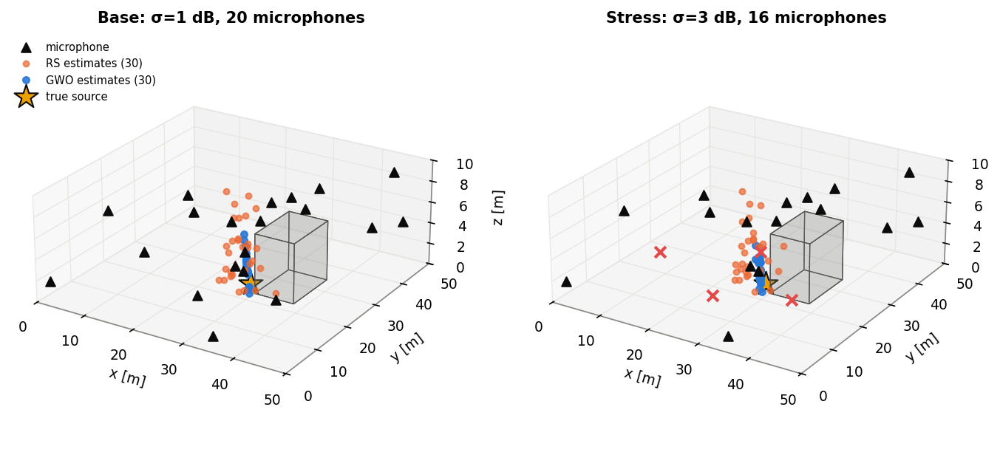
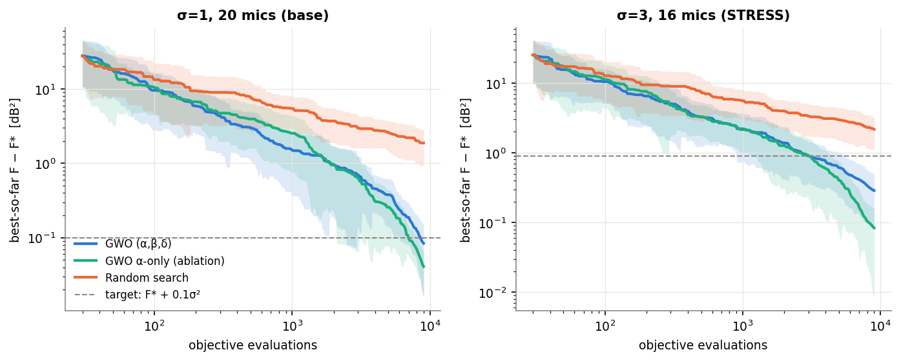
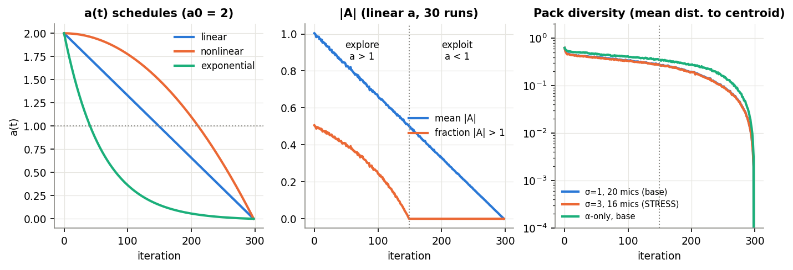
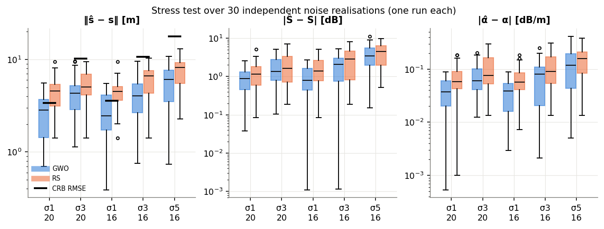
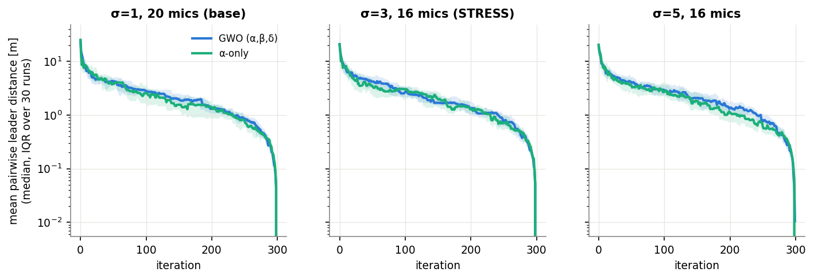
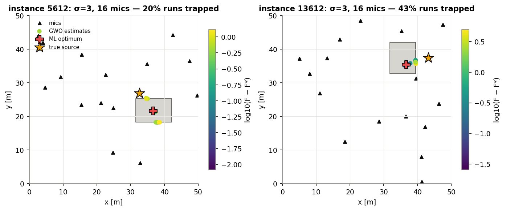

gwo_acoustic.ipynbA sound source somewhere in a 50 × 50 × 10 m hall is recorded by a microphone array. From the sound-pressure levels alone we want its 3-D position, its source level S and the propagation attenuation α — five continuous unknowns, coupled non-linearly through distance and corrupted by measurement noise. The misfit landscape is smooth but contains a long, flat, curved valley (S, α and range can partly compensate each other) and an obstacle the source cannot be inside. We solve it with a from-scratch Grey Wolf Optimizer (GWO), compare it with random search at an identical budget, study its parameters, stress it with more noise and fewer microphones, and ablate its three-leader guidance. Every number below is reproducible from seed 4612.
Instance (seed 4612). One generator default_rng(4612) draws, in order: the obstacle
(edges U[4–12, 4–12, 3–7] m, standing on the floor) → the true source (rejection-sampled 1–4 m outside
the box) → S ~ U(85,105) dB → α ~ U(0.05,0.30) dB/m → 20 microphones uniform in the hall (outside
the box) → noise shape zi ~ N(0,1) → the 4 microphones removed in the stress test. Result:
box [30.0, 37.9] × [22.9, 34.4] × [0, 5.7] m; source s = (29.75, 21.85, 1.11) m, 1.09 m from the box;
S = 93.47 dB; α = 0.0842 dB/m; removed microphones {0, 14, 18, 19}. Noise at level σ is εi = σzi.
Variables x = [sx, sy, sz, S, α]. Model and objective:
Under Gaussian noise the minimiser of f is the maximum-likelihood (ML) estimate and f(xtrue) ≈ σ². Constraints: (a) bounds x,y ∈ [0,50] m, z ∈ [0,10] m, S ∈ [60,120] dB; (b) 0 ≤ α ≤ αmax = 0.5 dB/m; (c) source outside the obstacle box B.
Constraint handling. (a) by reflection at the violated bound after every move (then clipping), which avoids wolves piling up on the boundary. The α encoding box is [−0.05, 0.55], wider than the physical range, so (b) and (c) are penalised. dB is the penetration depth: distance to the nearest escapable face (0 outside; the floor face is not escapable, and a point on the floor under the box is inside). λ choice: λobs = 10² dB²/m², λα = 10⁴ dB²/(dB/m)² make a violation of one resolution unit (0.1 m, 0.01 dB/m) cost ≈ σ² = 1 dB² — the noise floor — whereas 1 m inside the box costs 100 dB², more than nearly any feasible misfit. Why graded, not a death penalty: a constant/infinite penalty creates a flat plateau over the obstacle that gives the leaders no direction back to feasibility; the squared depth is zero with zero slope on the surface (feasible boundary solutions are undistorted) and grows smoothly inside, so the pack can cross the obstacle region while exploring and is pushed out proportionally.
Analysis tools (never given to the optimisers): the reference optimum F*, xML from 200-start L-BFGS-B, and the Cramér–Rao bound (CRB) J⁻¹ with J = GᵀG/σ², G = ∂Lpred/∂x, which gives the best achievable unbiased position RMSE and the parameter correlations. Base case: CRB position RMSE 3.4 m, dominated by z (σz = 3.2 m vs σx = 0.97, σy = 0.58 m — the array spans only 10 m vertically); corr(S, α) = 0.94; cond(G) ≈ 340.
GWO. The three best positions found so far are the leaders α, β, δ (elitist: best three of old leaders ∪ new pack); every wolf X moves to the average of three leader-guided points,
with r₁, r₂ ~ U(0,1) per wolf, leader and dimension, and a(t) decreasing from a₀ to 0: linear a₀(1−τ), nonlinear a₀(1−τ²) or exponential a₀(e−5τ−e−5)/(1−e−5), τ = t/(T−1). |A| > 1 (only possible while a > 1) throws a wolf beyond its leader — exploration; |A| < 1 lands it between itself and the leader — exploitation. The pack is updated as one vectorised NumPy operation, bounds are reflected after every update and every evaluation is logged. The ablation uses X(t+1) = X′α only. Baseline: pure random search, uniform in the same encoding box, same objective F, same budget, same per-evaluation log and seeds.
Budget: 9,000 evaluations for every method and setting (30 wolves × [1 + 299] iterations; N = 10 → 899
iterations, N = 60 → 149). Runs: 30 per method/setting, run k uses default_rng(4612 + k)
(common random numbers). Metrics: F statistics; localisation error ‖ŝ − s‖; |Ŝ − S|, |α̂ − α|; success =
final estimate within 1 m of xML; speed = evaluations until best-so-far F ≤ F* + 0.1σ², and evaluations
after which the incumbent stays within 3 m (≈ base CRB) of the source; Wilcoxon rank-sum tests.
Sensitivity: pack size {10, 30, 60}, schedule {linear, nonlinear, exponential}, a₀ {1.5, 2.0, 2.5}, on the base
and stress scenarios. Stress: σ ∈ {1, 3, 5} dB × {20, 16 microphones} on the fixed data set, plus 30 independent
noise realisations (one run each). Extra: α-only ablation on 3 scenarios and on 10 instances (seeds
4612 + 1000j) × N ∈ {10, 30}; λobs ∈ {0, 1, 10², 10⁴}; robustness on 10 further instances.
| Base (σ = 1 dB, 20 mics), 30 runs | F mean ± sd | median | best | worst | ‖ŝ−s‖ [m] | |Ŝ−S| [dB] | |α̂−α| [dB/m] | success | evals → ≤3 m |
|---|---|---|---|---|---|---|---|---|---|
| GWO (N = 30, linear, a₀ = 2) | 0.966 ± 0.069 | 0.954 | 0.882 | 1.176 | 2.01 ± 1.02 | 1.03 | 0.035 | 23 % | 2,775 (87 %) |
| Random search | 2.762 ± 0.979 | 2.521 | 1.232 | 5.248 | 4.71 ± 1.98 | 1.42 | 0.055 | 0 % | 5,610 (23 %) |
| Rank-sum p (GWO vs RS) | 2.9·10⁻¹¹ | 1.1·10⁻⁷ | 0.27 | 0.038 | |||||
F* = 0.882 (xML is 0.97 m from the truth). GWO's worst run beats random search's best: RS samples the 5-D box blindly and almost never hits the narrow low-misfit valley, while GWO concentrates samples around the three best points and shrinks its steps as a → 0. The S error difference is not significant because S is tied to α and range (corr 0.94): near-optimal fits still trade one for the other. Only 23 % of GWO runs end within 1 m of xML although 67 % reach F* + 0.1σ² — moving metres along the flat valley floor costs ~0.05 dB², below what GWO resolves in 9,000 evaluations; since xML itself is ~1 m from the truth and the CRB is 3.4 m, this precision limit hardly matters for localisation. 8.4 % of GWO evaluations entered the obstacle and 5.8 % had α < 0, yet no final GWO estimate is infeasible (one RS run ended slightly inside the box).


| Setting | N=10 | N=30 | N=60 | linear | nonlinear | exponential | a₀=1.5 | a₀=2.0 | a₀=2.5 |
|---|---|---|---|---|---|---|---|---|---|
| Base: F mean | 0.969 | 0.966 | 1.015 | 0.966 | 0.980 | 1.003 | 0.990 | 0.966 | 0.951 |
| Base: ‖ŝ−s‖ mean [m] | 2.09 | 2.01 | 2.78 | 2.01 | 2.31 | 2.32 | 2.62 | 2.01 | 1.80 |
| Base: evals to F target (median) | 6,856 | 7,689 | 6,811 | 7,689 | 8,232 | 3,221 | 7,845 | 7,689 | 7,594 |
| Stress: success (≤1 m of xML) | 43 % | 37 % | 57 % | 37 % | 53 % | 17 % | 7 % | 37 % | 43 % |
At a fixed budget, N = 60 leaves only 149 iterations for the a(t) schedule to refine (worst at σ = 1) but its diversity
wins under stress (best success, 57 %). The exponential schedule reaches the F target 2.4× faster but is the least
reliable (17 % success under stress): a(t) falls below 1 after ≈ 40 iterations, ending exploration early. a₀ = 1.5
under-explores (|A| > 1 only in the first third of the run); a₀ = 2.5 and the nonlinear schedule, which lengthen the
|A| > 1 phase, are the best settings on this flat, coupled landscape (box plots: fig04/05_*).

| Scenario | F* | GWO F mean | RS F mean | GWO ‖ŝ−s‖ (fixed data) | GWO RMSE over 30 noise draws | RS RMSE | CRB RMSE | GWO |Ŝ−S| / |α̂−α| (draws) |
|---|---|---|---|---|---|---|---|---|
| σ=1, 20 mics (base) | 0.88 | 0.97 | 2.76 | 2.01 m | 3.03 m | 5.03 m | 3.40 m | 0.91 dB / 0.040 |
| σ=3, 20 mics | 8.22 | 8.47 | 10.62 | 2.45 m | 4.87 m | 5.82 m | 10.19 m | 1.82 / 0.079 |
| σ=1, 16 mics | 1.08 | 1.20 | 2.79 | 1.89 m | 2.98 m | 4.71 m | 3.57 m | 1.02 / 0.038 |
| σ=3, 16 mics (stress) | 10.17 | 10.46 | 12.34 | 2.07 m | 4.97 m | 6.58 m | 10.72 m | 2.13 / 0.080 |
| σ=5, 16 mics | 29.00 | 29.37 | 31.50 | 2.38 m | 6.59 m | 7.87 m | 17.87 m | 3.83 / 0.142 |
GWO beats RS in every scenario (p < 10⁻⁶ for F and location). What degraded and why. Noise floor: F* scales with σ², and the CRB position RMSE scales linearly with σ (3.4 → 10.2 m); over 30 noise draws GWO's RMSE grows 3.0 → 5.0 → 6.6 m and the S and α errors roughly quadruple. Geometry/observability: removing microphones {0, 14, 18, 19} raises the CRB by only ≈ 5 % but increases corr(S, α) from 0.943 to 0.957 — the array loses mostly the range diversity that separates S from α. S–α–distance coupling: on the fixed data set the location barely moves (2.0 → 2.4 m) but the parameters do: at σ ≥ 3 the ML solution pins α at its physical bound 0 and lowers S by 2.5 dB, absorbing the noise by trading attenuation against level (GWO, finding this biased ML solution, has an even larger S error than scattered RS). At σ ≥ 3 the errors fall below the CRB because the box (z ∈ [0,10], α ≥ 0) caps the estimate: the estimator is biased but its spread is bounded. The optimisation itself does not get harder — GWO hits F* + 0.1σ² in 100 % of stress runs, median 2,995 evaluations — the estimation does. Leader diversity (Fig. 5) stays higher for longer under noise: a flatter valley holds more near-equivalent candidates.

Primary instance: no — α-only is better. Localisation 1.36 ± 0.45 vs 2.01 ± 1.02 m (base, p = 0.008), 1.59 ± 0.20 vs 2.07 ± 0.73 m (stress, p = 0.029), 2.07 ± 0.13 vs 2.38 ± 0.41 m (σ = 5, p = 0.0015), with lower spread of final estimates. The three-leader mechanism is visible but does not pay off: averaging three independent moves lowers step variance (mid-run diversity 0.27 vs 0.35) and aims the pack at the centroid of α, β, δ, which on a curved valley lies off the floor; in the second half the three-leader α is > 3 m from xML 11–20 % of the time vs ≤ 4 % for α-only. α is replaced by a distant "lucky" candidate ≈ 5 times per run in both variants, but on this single-funnel instance those candidates are in the right basin, so greedy following is not punished. Leaders never reach premature consensus: they agree to < 1 m only after ≈ 250 iterations (Fig. 5). Across 10 instances (σ = 3, 16 mics): with a small pack (N = 10) three leaders win on 6/10 instances (mean F − F* 0.84 vs 1.08 dB²) and avert a catastrophe on instance 6612 (worst run 3.2 vs 24.4 dB²) — with 10 wolves an α-only pack follows one misleading fit wholesale, while averaging caps any single leader's pull at one third. With N = 30 α-only is better on 7/10 instances and ends far from xML less often (17 % vs 25 %, signed-rank p = 0.008). Conclusion: the three-leader rule is insurance against a single misleading leader that matters when diversity is scarce; when the pack is already diverse it costs exploitation precision.

Exploration vs exploitation. With linear a(t) and a₀ = 2, half of all moves have |A| > 1 at the start and none after iteration 150 (a = 1). Leader paths (fig06) show long jumps across the hall in that first phase and short refining moves afterwards; diversity drops sharply after the switch. Schedules that shorten the |A| > 1 phase (exponential, a₀ = 1.5) converge fast but stall; those that lengthen it (nonlinear, a₀ = 2.5) are the most accurate here. Robustness across seeds and noise. Over 30 run seeds GWO's F spread is 14× smaller than RS's. On 10 further instances GWO has the lower median error on 9/10 at σ = 1, but only 4/10 under stress: when the CRB is ≈ 7 m the ML estimate itself is metres from the truth, so better fitting no longer means better localising — the limit is information, not optimisation. Speed. GWO's incumbent stays within 3 m of the source after a median 2,775 evaluations (87 % of runs) vs 5,610 for RS (23 %); the F target is reached after 7,689 evaluations at σ = 1 and 2,995 under stress. Failure modes (fig15, failure table): (i) stagnation when a(t) decays too fast — exponential decay leaves 77 % of stress runs short of F* (57 % linear); (ii) obstacle-boundary solution — on instance 5612 the ML optimum lies on the obstacle roof (z = 4.49 m, top 4.5 m), 7 m from the source, and runs split between two faces of the box; (iii) S–α–distance ambiguity — on instance 13612 xML is 6.6 m from the truth with α̂ = 0.32 vs 0.11 dB/m: a closer, more strongly attenuated source explains the data equally well, and 43 % of runs stop in the flat valley between. (ii) and (iii) are properties of the data: a better optimiser converges more reliably to the wrong-but-optimal answer. λ check: λobs ∈ {0, 1, 10², 10⁴} leaves no estimate inside the box on instance 4612 (constraint inactive at the optimum); 10⁴ is slightly worse (2.11 vs 1.9 m) because a steep wall makes the region next to the box harder to explore.

A from-scratch GWO with reflection bounds and a graded depth penalty solves the 5-parameter localisation problem far better than random search at the same 9,000-evaluation budget (F 0.97 vs 2.76 dB², error 2.0 vs 4.7 m, p ≤ 10⁻⁷) and reaches near-CRB accuracy at σ = 1. Its accuracy is limited by the S–α–distance coupling and the poor vertical observability of the array, not by the search: under 3–5 dB noise both GWO and any estimator degrade, and errors are then set by the noise floor and the parameter bounds. Longer exploration (a₀ = 2.5, nonlinear a(t)) helps, fast decay hurts. The canonical three-leader guidance is robustness insurance for small packs rather than a universal gain: on the primary instance an α-only pack is more precise. Natural extensions are a final local polish (e.g. Nelder–Mead from α) to resolve the flat valley, and a reparameterisation (e.g. S − α·r̄) to decorrelate S and α.